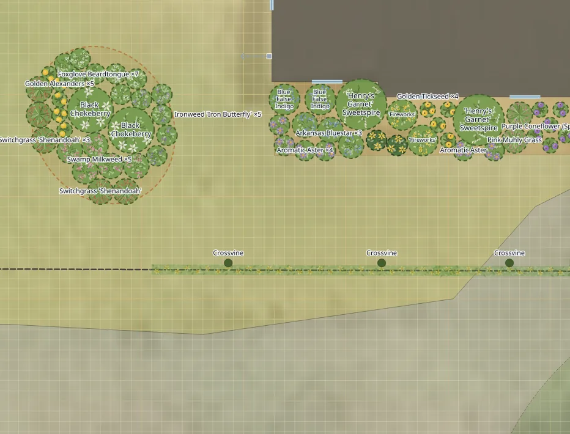
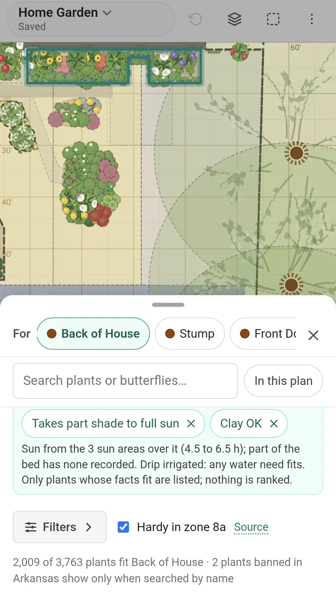
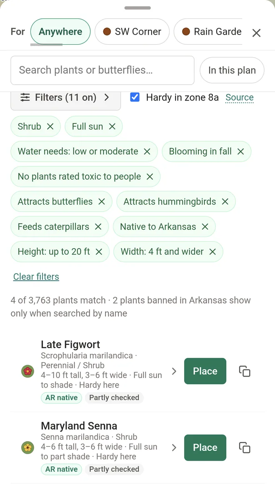

Test FullGrown before it launches
FullGrown is a garden planner that tells you what will grow in each spot in your yard, and what it will do there. Every plant fact says where it came from.

1. Draw your yard, or trace it from an aerial photo, and mark where the sun falls.

2. Select a bed: the list shows only the plants that fit its sun, soil and moisture.

3. Narrow it to what you want: native to your state, food for caterpillars, flowers for butterflies.


We're looking for a small group of gardeners to use it on a real yard and tell us what's confusing or missing.
- Free during the beta, sync between your devices included. It runs in your phone's or computer's browser.
- A free year of the paid plan after launch, for testers whose feedback helps shape it.
- A few weeks on your own yard, and a note now and then about what worked and what didn't.
- Best for gardens in the East and Midwest for now. The plant list is thinner elsewhere, and we'd still like to hear from you.
Invitations go out in small waves, by email from hello@fullgrown.garden.